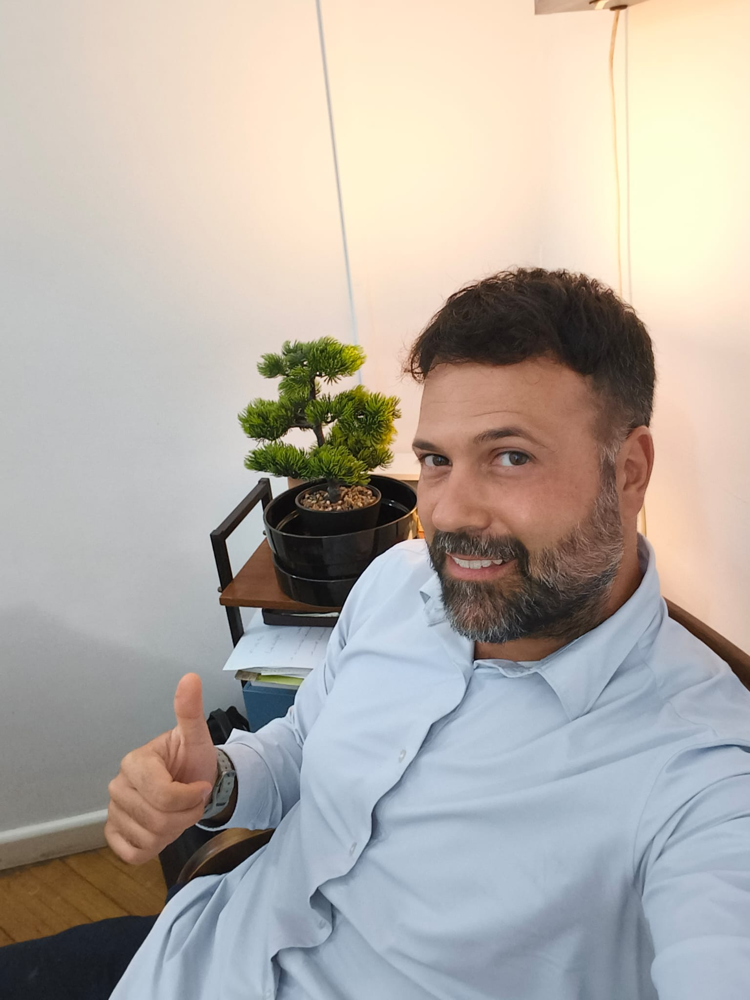
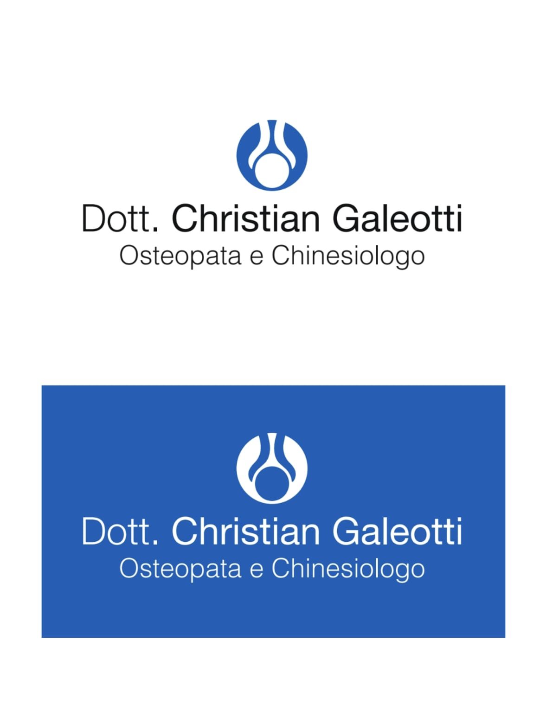

2011
Laurea in Scienze Motorie
Università degli Studi di Roma “Foro Italico”.
Chi sono
Lo sport fa parte della mia vita fin dall’infanzia. Da questo interesse è nato il mio percorso di studio e di lavoro.

Il percorso
Osteopatia e Scienze Motorie sono gli ambiti che hanno segnato il mio percorso.
2011
Università degli Studi di Roma “Foro Italico”.
2019
Centro Studi di Osteopatia Tradizionale · Roma.
Il DPCM 25 marzo 2026 disciplina il percorso di riconoscimento dell’equipollenza dei titoli pregressi alla laurea abilitante in Osteopatia, subordinato ai requisiti e agli adempimenti previsti. Il riferimento normativo ↗
In corso
Percorso di formazione attualmente in corso.
Il primo incontro
Il colloquio iniziale serve a raccogliere la tua storia e la documentazione clinica. È anche il momento per porre domande e chiarire cosa aspettarsi dalla seduta.
Scopri la prima seduta